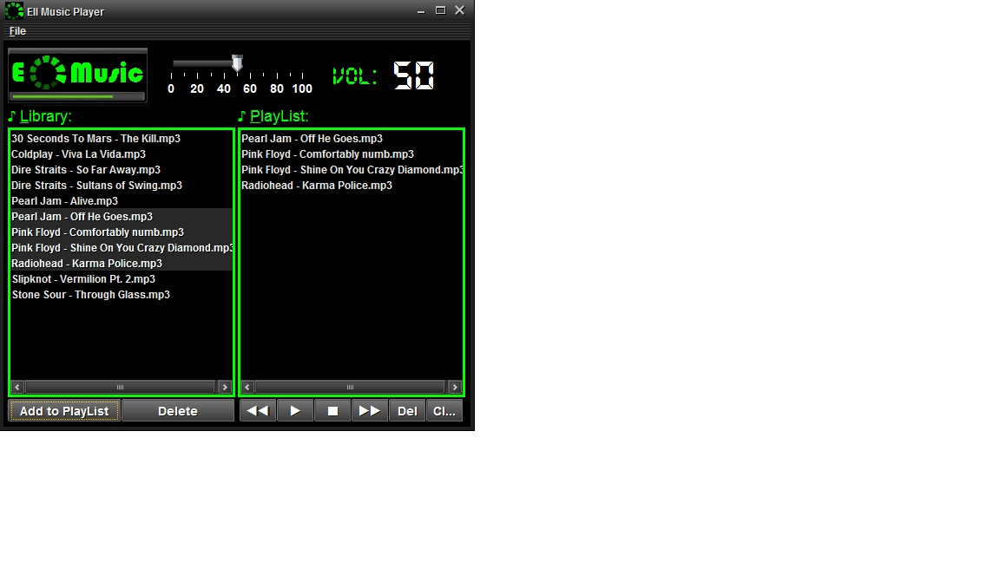

EII Music Player
EII Music Player es un reproductor de archivos MP3 que permite acceder a pistas musicales en su librería.
De esta librería, podrá pasar las canciones al reproductor en cuestión.

Las opciones del reproductor son las siguientes:
- Play: reproduce la canción seleccionada o la primera canción de la lista.
- Stop: finaliza la reproducción de una canción.
- Rewind: reproduce la canción previa a la seleccionada.
- Forward: reproduce la canción posterior a la seleccionada.
- Del: elimina la canción seleccionada.